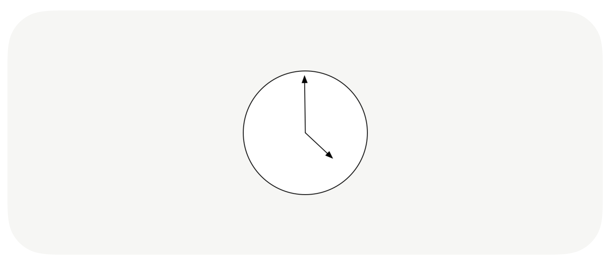
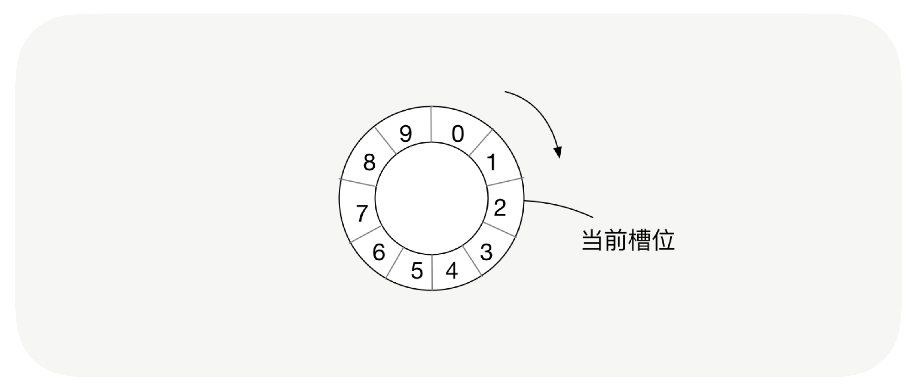
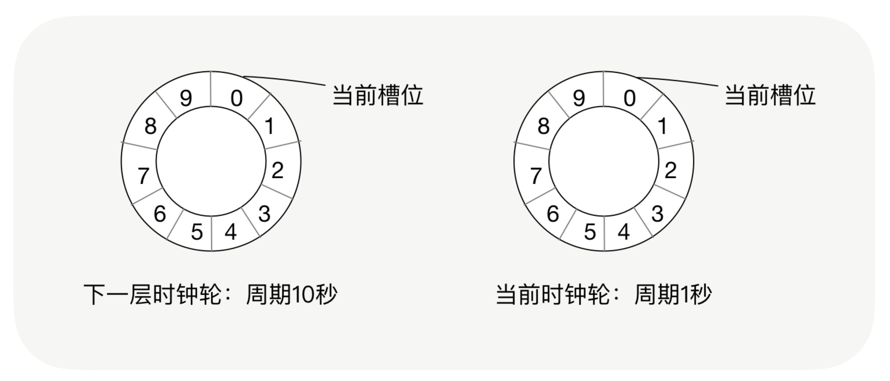
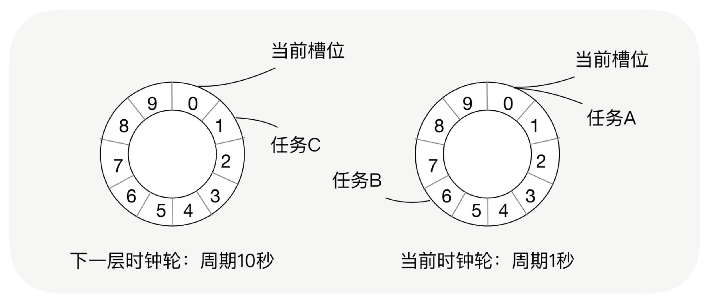
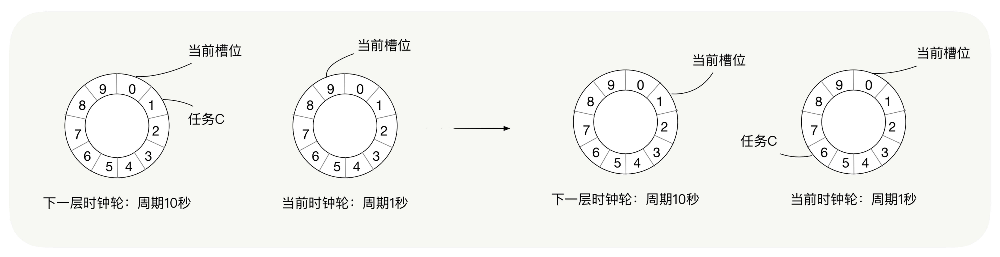

- 00 开篇词 别老想着怎么用好RPC框架，你得多花时间琢磨原理.md.html
- 01 核心原理：能否画张图解释下RPC的通信流程？.md.html
- 02 协议：怎么设计可扩展且向后兼容的协议？.md.html
- 03 序列化：对象怎么在网络中传输？.md.html
- 04 网络通信：RPC框架在网络通信上更倾向于哪种网络IO模型？.md.html
- 05 动态代理：面向接口编程，屏蔽RPC处理流程.md.html
- 06 RPC实战：剖析gRPC源码，动手实现一个完整的RPC.md.html
- 07 架构设计：设计一个灵活的RPC框架.md.html
- 08 服务发现：到底是要CP还是AP？.md.html
- 09 健康检测：这个节点都挂了，为啥还要疯狂发请求？.md.html
- 10 路由策略：怎么让请求按照设定的规则发到不同的节点上？.md.html
- 11 负载均衡：节点负载差距这么大，为什么收到的流量还一样？.md.html
- 12 异常重试：在约定时间内安全可靠地重试.md.html
- 13 优雅关闭：如何避免服务停机带来的业务损失？.md.html
- 14 优雅启动：如何避免流量打到没有启动完成的节点？.md.html
- 15 熔断限流：业务如何实现自我保护_.md.html
- 16 业务分组：如何隔离流量？.md.html
- 17 异步RPC：压榨单机吞吐量.md.html
- 18 安全体系：如何建立可靠的安全体系？.md.html
- 19 分布式环境下如何快速定位问题？.md.html
- 20 详解时钟轮在RPC中的应用.md.html
- 21 流量回放：保障业务技术升级的神器.md.html
- 22 动态分组：超高效实现秒级扩缩容.md.html
- 23 如何在没有接口的情况下进行RPC调用？.md.html
- 24 如何在线上环境里兼容多种RPC协议？.md.html
- 加餐 RPC框架代码实例详解.md.html
- 加餐 谈谈我所经历过的RPC.md.html
- 答疑课堂 基础篇与进阶篇思考题答案合集.md.html
- 结束语 学会从优秀项目的源代码中挖掘知识.md.html
- 捐赠
20 详解时钟轮在RPC中的应用
你好，我是何小锋。上一讲我们学习了在分布式环境下如何快速定位问题，简单回顾下重点。在分布式环境下，RPC框架自身以及服务提供方的业务逻辑实现，都应该对异常进行合理地封装，让使用方可以根据异常快速地定位问题；而在依赖关系复杂且涉及多个部门合作的分布式系统中，我们也可以借助分布式链路跟踪系统，快速定位问题。
现在，切换到咱们今天的主题，一起看看时钟轮在RPC中的应用。
定时任务带来了什么问题？
在讲解时钟轮之前，我们先来聊聊定时任务。相信你在开发的过程中，很多场景都会使用到定时任务，在RPC框架中也有很多地方会使用到它。就以调用端请求超时的处理逻辑为例，下面我们看一下RPC框架是如果处理超时请求的。
回顾下[第 17 讲]，我讲解Future的时候说过：无论是同步调用还是异步调用，调用端内部实行的都是异步，而调用端在向服务端发送消息之前会创建一个Future，并存储这个消息标识与这个Future的映射，当服务端收到消息并且处理完毕后向调用端发送响应消息，调用端在接收到消息后会根据消息的唯一标识找到这个Future，并将结果注入给这个Future。
那在这个过程中，如果服务端没有及时响应消息给调用端呢？调用端该如何处理超时的请求？
没错，就是可以利用定时任务。每次创建一个Future，我们都记录这个Future的创建时间与这个Future的超时时间，并且有一个定时任务进行检测，当这个Future到达超时时间并且没有被处理时，我们就对这个Future执行超时逻辑。
那定时任务该如何实现呢？
有种实现方式是这样的，也是最简单的一种。每创建一个Future我们都启动一个线程，之后sleep，到达超时时间就触发请求超时的处理逻辑。
这种方式吧，确实简单，在某些场景下也是可以使用的，但弊端也是显而易见的。就像刚才我讲的那个Future超时处理的例子，如果我们面临的是高并发的请求，单机每秒发送数万次请求，请求超时时间设置的是5秒，那我们要创建多少个线程用来执行超时任务呢？超过10万个线程，这个数字真的够吓人了。
别急，我们还有另一种实现方式。我们可以用一个线程来处理所有的定时任务，还以刚才那个Future超时处理的例子为例。假设我们要启动一个线程，这个线程每隔100毫秒会扫描一遍所有的处理Future超时的任务，当发现一个Future超时了，我们就执行这个任务，对这个Future执行超时逻辑。
这种方式我们用得最多，它也解决了第一种方式线程过多的问题，但其实它也有明显的弊端。
同样是高并发的请求，那么扫描任务的线程每隔100毫秒要扫描多少个定时任务呢？如果调用端刚好在1秒内发送了1万次请求，这1万次请求要在5秒后才会超时，那么那个扫描的线程在这个5秒内就会不停地对这1万个任务进行扫描遍历，要额外扫描40多次（每100毫秒扫描一次，5秒内要扫描近50次），很浪费CPU。
在我们使用定时任务时，它所带来的问题，就是让CPU做了很多额外的轮询遍历操作，浪费了CPU，这种现象在定时任务非常多的情况下，尤其明显。
什么是时钟轮？
这个问题也不难解决，我们只要找到一种方式，减少额外的扫描操作就行了。比如我的一批定时任务是5秒之后执行，我在4.9秒之后才开始扫描这批定时任务，这样就大大地节省了CPU。这时我们就可以利用时钟轮的机制了。
我们先来看下我们生活中用到的时钟。

很熟悉了吧，时钟有时针、分针和秒针，秒针跳动一周之后，也就是跳动60个刻度之后，分针跳动1次，分针跳动60个刻度，时针走动一步。
而时钟轮的实现原理就是参考了生活中的时钟跳动的原理。

在时钟轮机制中，有时间槽和时钟轮的概念，时间槽就相当于时钟的刻度，而时钟轮就相当于秒针与分针等跳动的一个周期，我们会将每个任务放到对应的时间槽位上。
时钟轮的运行机制和生活中的时钟也是一样的，每隔固定的单位时间，就会从一个时间槽位跳到下一个时间槽位，这就相当于我们的秒针跳动了一次；时钟轮可以分为多层，下一层时钟轮中每个槽位的单位时间是当前时间轮整个周期的时间，这就相当于1分钟等于60秒钟；当时钟轮将一个周期的所有槽位都跳动完之后，就会从下一层时钟轮中取出一个槽位的任务，重新分布到当前的时钟轮中，当前时钟轮则从第0槽位从新开始跳动，这就相当于下一分钟的第1秒。
为了方便你了解时钟轮的运行机制，我们用一个场景例子来模拟下，一起看下这个场景。
假设我们的时钟轮有10个槽位，而时钟轮一轮的周期是1秒，那么我们每个槽位的单位时间就是100毫秒，而下一层时间轮的周期就是10秒，每个槽位的单位时间也就是1秒，并且当前的时钟轮刚初始化完成，也就是第0跳，当前在第0个槽位。

好，现在我们有3个任务，分别是任务A（90毫秒之后执行）、任务B（610毫秒之后执行）与任务C（1秒610毫秒之后执行），我们将这3个任务添加到时钟轮中，任务A被放到第0槽位，任务B被放到第6槽位，任务C被放到下一层时间轮的第1槽位，如下面这张图所示。

当任务A刚被放到时钟轮，就被即刻执行了，因为它被放到了第0槽位，而当前时间轮正好跳到第0槽位（实际上还没开始跳动，状态为第0跳）；600毫秒之后，时间轮已经进行了6跳，当前槽位是第6槽位，第6槽位所有的任务都被取出执行；1秒钟之后，当前时钟轮的第9跳已经跳完，从新开始了第0跳，这时下一层时钟轮从第0跳跳到了第1跳，将第1槽位的任务取出，分布到当前的时钟轮中，这时任务C从下一层时钟轮中取出并放到当前时钟轮的第6槽位；1秒600毫秒之后，任务C被执行。

看完了这个场景，相信你对时钟轮的机制已经有所了解了。在这个例子中，时钟轮的扫描周期仍是100毫秒，但是其中的任务并没有被过多的重复扫描，它完美地解决了CPU浪费的问题。
这个机制其实不难理解，但实现起来还是很有难度的，其中要注意的问题也很多。具体的代码实现我们这里不展示，这又是另外一个比较大的话题了。有兴趣的话你可以自行查阅下相关源码，动手实现一下。到哪里卡住了，我们可以在留言区交流。
时钟轮在RPC中的应用
通过刚才对时钟轮的讲解，相信你可以看出，它就是用来执行定时任务的，可以说在RPC框架中只要涉及到定时相关的操作，我们就可以使用时钟轮。
那么RPC框架在哪些功能实现中会用到它呢？
刚才我举例讲到的调用端请求超时处理，这里我们就可以应用到时钟轮，我们每发一次请求，都创建一个处理请求超时的定时任务放到时钟轮里，在高并发、高访问量的情况下，时钟轮每次只轮询一个时间槽位中的任务，这样会节省大量的CPU。
调用端与服务端启动超时也可以应用到时钟轮，以调用端为例，假设我们想要让应用可以快速地部署，例如1分钟内启动，如果超过1分钟则启动失败。我们可以在调用端启动时创建一个处理启动超时的定时任务，放到时钟轮里。
除此之外，你还能想到RPC框架在哪些地方可以应用到时钟轮吗？还有定时心跳。RPC框架调用端定时向服务端发送心跳，来维护连接状态，我们可以将心跳的逻辑封装为一个心跳任务，放到时钟轮里。
这时你可能会有一个疑问，心跳是要定时重复执行的，而时钟轮中的任务执行一遍就被移除了，对于这种需要重复执行的定时任务我们该如何处理呢？在定时任务的执行逻辑的最后，我们可以重设这个任务的执行时间，把它重新丢回到时钟轮里。
总结
今天我们主要讲解了时钟轮的机制，以及时钟轮在RPC框架中的应用。
这个机制很好地解决了定时任务中，因每个任务都创建一个线程，导致的创建过多线程的问题，以及一个线程扫描所有的定时任务，让CPU做了很多额外的轮询遍历操作而浪费CPU的问题。
时钟轮的实现机制就是模拟现实生活中的时钟，将每个定时任务放到对应的时间槽位上，这样可以减少扫描任务时对其它时间槽位定时任务的额外遍历操作。
在时间轮的使用中，有些问题需要你额外注意：
- 时间槽位的单位时间越短，时间轮触发任务的时间就越精确。例如时间槽位的单位时间是10毫秒，那么执行定时任务的时间误差就在10毫秒内，如果是100毫秒，那么误差就在100毫秒内。
- 时间轮的槽位越多，那么一个任务被重复扫描的概率就越小，因为只有在多层时钟轮中的任务才会被重复扫描。比如一个时间轮的槽位有1000个，一个槽位的单位时间是10毫秒，那么下一层时间轮的一个槽位的单位时间就是10秒，超过10秒的定时任务会被放到下一层时间轮中，也就是只有超过10秒的定时任务会被扫描遍历两次，但如果槽位是10个，那么超过100毫秒的任务，就会被扫描遍历两次。
结合这些特点，我们就可以视具体的业务场景而定，对时钟轮的周期和时间槽数进行设置。
在RPC框架中，只要涉及到定时任务，我们都可以应用时钟轮，比较典型的就是调用端的超时处理、调用端与服务端的启动超时以及定时心跳等等。
课后思考
在RPC框架中，除了我说过的那几个例子，你还知道有哪些功能的实现可以应用到时钟轮？
欢迎留言和我分享你的答案，也欢迎你把文章分享给你的朋友，邀请他加入学习。我们下节课再见！
© 2019 - 2023 Liangliang Lee. Powered by gin and hexo-theme-book.